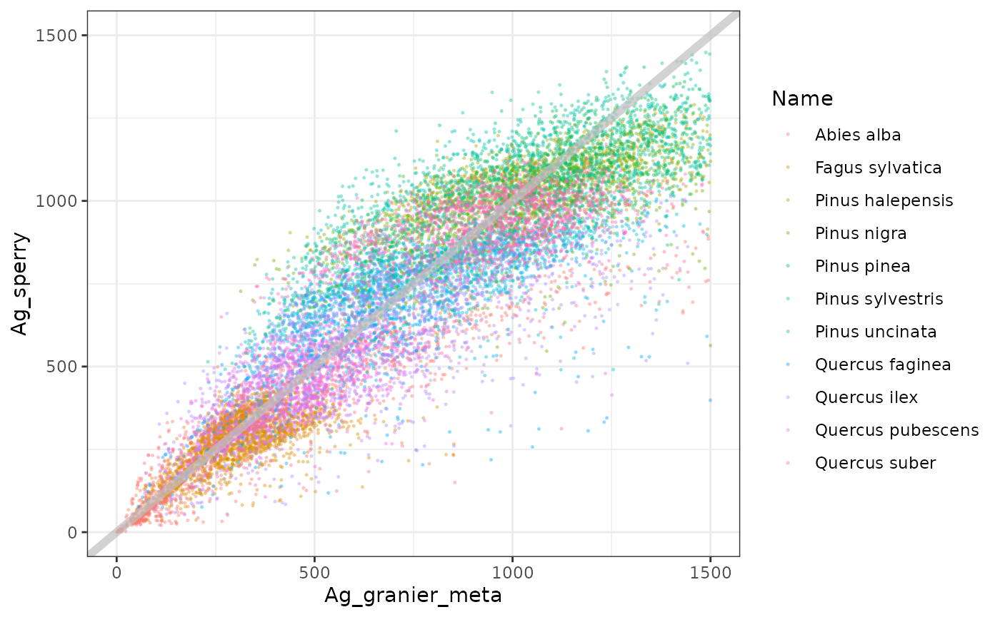

Meta-modelling exercise
Miquel De Cáceres
2022-02-10
Source:vignettes/parametrization/Metamodelling.Rmd
Metamodelling.RmdIntroduction
Goal
This document presents a metamodelling exercise between basic (Granier’s) and advanced (Sperry’s) versions of the soil plant water balance model. The goal is to make predictions produced by the basic water balance model as similar as possible to those predicted by the advanced model which, given its greater process detail and physical basis, is assumed to provide more realistic and accurate predictions when appropriate functional traits are supplied. This should benefit not only water balance simulations (function spwb) but also simulations of forest growth (growth) and dynamics (fordyn).
Target parameters
The following parameters are used in the basic model, that cannot easily be parameterized from available information (see https://emf-creaf.github.io/medfatebook/index.html):
-
Tmax_LAIandTmax_LAIsp, which determine the ratio of maximum transpiration over potential evapotranspiration for a given LAI. An empirical function with these parameters was derived by Granier (1999) for European temperate forests, without distinguishing between forests dominated by different species. -
WUE, which represents the daily water use efficiency (g C of gross assimilation / l transpired) under conditions of high light and no water deficit. -
WUE_decay, which is the exponent of the function specifying the decrease in relative WUE for lower positions within the canopy, due to the decrease of available light. Again, this rate of decay should depend on the species, according to its degree of shade tolerance, and will be influenced by parameters regulating plant hydraulics, photosynthesis and light extinction. -
Ar2Al, which is the ratio of fine root area to leaf area. This parameter is needed to determine the allocation to fine root biomass.
As stated above, the general idea is to use simulation from the advanced water balance model to obtain estimates of the previous parameters, so that simulations with the basic water balance model (which is faster) produce an output similar that of the advanced model (which is slower). In the case of Tmax_LAI and Tmax_LAIsp we aim to determine a species-specific factor that can be used to modify the empirical coefficients obtained by Granier (1999). Water use efficiency is an emergent property of the advanced water balance model, depending on multiple parameters (hydraulics, photosynthetic capacity, etc). We can estimate WUE values using simulations with high light levels and no water deficit. The decrease of WUE for plant cohorts in progressively shadier environments with respect to WUE under full light can provide us with an estimate of WUE_decay, which again will depend on multiple plant traits (e.g. the former plus extinction coefficients).
Target species
The metamodelling procedure could be applied to any target species, but we focused on the main tree species in Catalonia: Pinus halepensis, Pinus sylvestris, Pinus nigra, Pinus uncinata, Pinus pinea, Quercus ilex, Quercus pubescens, Quercus suber, Fagus sylvatica and Abies alba.
For each of those species, we first revised the values of the most important parameters in the advanced water balance model:| Name | SLA | Al2As | VCleaf_kmax | Kmax_stemxylem | Vmax298 | Jmax298 |
|---|---|---|---|---|---|---|
| Abies alba | 7.768174 | 7194.245 | 6 | 1.3000000 | 58.08712 | 103.2823 |
| Fagus sylvatica | 18.320000 | 2076.120 | 8 | 0.9000000 | 94.50000 | 159.9000 |
| Pinus halepensis | 5.140523 | 1317.523 | 4 | 0.1500000 | 72.19617 | 124.1687 |
| Pinus nigra | 4.569508 | 1272.265 | 5 | 0.4100000 | 68.50296 | 118.7671 |
| Pinus pinea | 4.207291 | 1615.509 | 4 | 0.2500000 | 72.42173 | 124.4972 |
| Pinus sylvestris | 4.897943 | 1598.180 | 5 | 0.4500000 | 83.00000 | 143.0000 |
| Pinus uncinata | 3.804390 | 1608.774 | 5 | 0.6895376 | 73.41275 | 125.9386 |
| Quercus pubescens | 11.800000 | 6031.582 | 6 | 0.7000000 | 57.33919 | 102.1548 |
| Quercus ilex | 6.340000 | 3908.823 | 4 | 0.4000000 | 68.51600 | 118.7863 |
| Quercus faginea | 8.328895 | 4189.325 | 6 | 0.7000000 | 71.21535 | 122.7384 |
| Quercus suber | 8.656130 | 4189.325 | 4 | 0.4000000 | 70.27833 | 121.3691 |
Ideally, the predictions of the advanced water balance model should be evaluated with these parameterization before using it as reference for the metamodelling study. Otherwise we could be biasing both models with inappropriate parameter values. The advance water balance model has been evaluated using data from experimental plots in stands dominated by some of the target species, but not others.
Simulations
Forest, soil and weather inputs
We used forest plot data from the third edition of the Spanish National Forest Inventory (IFN3). Forest plots were located in Catalonia and with a minimum basal area of 3 \(m^2·ha^{-1}\). For each target species we randomly selected up to 60 forest plots where the species was dominant (> 80% in basal area). Plant records corresponding to species different than the target species were excluded.
Like in other exercises, soil data was obtained from SoilGrids, with rock fragment contents corrected according to the amount of surface stoniness recorded in the IFN plots. Daily weather data corresponding to year 2000 was obtained from interpolation using meteoland on the coordinates of each forest plot.
Soil water balance simulations
For each target species, we ran the soil water balance model using function spwb (actually, spwbpoints from package medfateland) and either Granier’s or Sperry’s transpiration mode. Simulations were conducted using control$unlimitedSoilWater = TRUE so that transpiration and photosynthesis estimates did not include water limitations (cohorts in the shade were, however, affected by lower PAR). For each plant cohort in each simulated plot we assembled the percentage of PAR available to the plant cohort, the annual transpiration and annual photosynthesis produced by each model.
Fine root area to leaf area ratio
Estimates of the fine root area to leaf area ratio (Ar2Al) can be estimated when initializing the advanced water balance model. In this mode, the maximum hydraulic conductance in the rhizosphere is estimated assuming that the resistance of the rhizosphere represents 15% of total hydraulic resistance (see control parameter averageFracRhizosphereResistance), on average across a range of soil water potentials. The model estimates fine root biomass from maximum hydraulic conductance in the rhizosphere (as explained in https://emf-creaf.github.io/medfatebook/carbonpoolsbalance.html#fine-root-area-and-biomass).
The following table presents the average values (and std. error) of whole-plant maximum hydraulic conductance (i.e. considering leaves stems and coarse roots), as well as average values of the Ar2Al estimates for each species:
| Name | n | kplant_mean | kplant_se | Ar2Al_mean | Ar2Al_se |
|---|---|---|---|---|---|
| Abies alba | 1780 | 0.2805085 | 0.0031895 | 0.6430186 | 0.0094036 |
| Fagus sylvatica | 1769 | 0.9630081 | 0.0072003 | 0.4517513 | 0.0046184 |
| Pinus halepensis | 1102 | 0.6185928 | 0.0039454 | 0.7344168 | 0.0070314 |
| Pinus nigra | 1523 | 1.2624309 | 0.0046903 | 2.9911585 | 0.0318801 |
| Pinus pinea | 1314 | 0.7224384 | 0.0028811 | 0.7945862 | 0.0060634 |
| Pinus sylvestris | 1765 | 1.1783006 | 0.0034281 | 2.7295937 | 0.0405120 |
| Pinus uncinata | 1730 | 1.4366275 | 0.0039828 | 1.3749624 | 0.0116992 |
| Quercus faginea | 668 | 1.0944696 | 0.0111599 | 0.3209908 | 0.0052834 |
| Quercus ilex | 1559 | 0.7399350 | 0.0042168 | 3.2520348 | 0.0277877 |
| Quercus pubescens | 1132 | 0.7972673 | 0.0074647 | 0.2799216 | 0.0033298 |
| Quercus suber | 1444 | 0.6037066 | 0.0038843 | 5.2324908 | 0.0508960 |
Transpiration ratio
We wanted to determine if there were systematic differences in E between the two models. Such differences should be species-specific. Even if the basic model has a single linear equation (from Granier) to estimate the ratio Tmax to PET from stand’s LAI, the advanced model estimates transpiration (E) from a complex calculation involving several species-specific functional traits. The ratio between annual E estimates from the two models could be used to scale the estimates of Granier’s equation (or in other words, to scale its parameters).
The following plot displays the ratio between annual E estimates obtained using the basic and advanced models, where we use the percentage of PAR of the plant cohort in the x-axis to show whether the relationship changes between sunlit or shade cohorts:

Tmax_LAI = 0.134 and Tmax_LAIsq = -0.006).
| Name | n | E_ratio_mean | E_ratio_sd | E_ratio_se | Tmax_LAI | Tmax_LAIsq |
|---|---|---|---|---|---|---|
| Abies alba | 1780 | 0.5496171 | 0.1787243 | 0.0042362 | 0.0736487 | -0.0032977 |
| Fagus sylvatica | 1769 | 1.0035804 | 0.2075986 | 0.0049358 | 0.1344798 | -0.0060215 |
| Pinus halepensis | 1102 | 1.3251070 | 0.2526109 | 0.0076096 | 0.1775643 | -0.0079506 |
| Pinus nigra | 1523 | 1.2544666 | 0.2830440 | 0.0072528 | 0.1680985 | -0.0075268 |
| Pinus pinea | 1314 | 1.6750968 | 0.2757467 | 0.0076070 | 0.2244630 | -0.0100506 |
| Pinus sylvestris | 1765 | 1.2996779 | 0.2602609 | 0.0061949 | 0.1741568 | -0.0077981 |
| Pinus uncinata | 1730 | 1.3201635 | 0.2486118 | 0.0059772 | 0.1769019 | -0.0079210 |
| Quercus faginea | 668 | 1.1782881 | 0.2993738 | 0.0115831 | 0.1578906 | -0.0070697 |
| Quercus ilex | 1559 | 0.7920657 | 0.2187192 | 0.0055394 | 0.1061368 | -0.0047524 |
| Quercus pubescens | 1132 | 1.0658610 | 0.2353309 | 0.0069945 | 0.1428254 | -0.0063952 |
| Quercus suber | 1444 | 1.0290614 | 0.1521256 | 0.0040033 | 0.1378942 | -0.0061744 |
Water use efficiency
Relative WUE
WUE values depend on the species and plot environmental factors, as well as on the position of the plant within the canopy. We first estimate the maximum PAR and WUE for each species in each plot, and find the relative WUE as the ratio between WUE and its maximum.
Model fitting of the relative WUE reduction
We want to build a model of the relative WUE as a function of available PAR, so that we can reduce species-level maximum WUE values for cohorts in the shadow. To fit the model we need good estimates of relative WUE, which implies that the maximum WUE values make sense. With this aim, we focus on those records corresponding to plots/species where at least 85% of PAR was available for at least one cohort of the species in the plot.
Using this selection, we first draw the relationship between PAR and WUEg: 
where we see that the relationship is species-specific. WUE is known to decrease for parts of the canopy receiving less light (e.g. Medrano et al. 2012). We can now plot relative WUE in relationship to PAR:

Even though light extinction is not the same in all species, here it seems reasonable to fit a single function for all species. We thus fit a non-linear model where relative WUE is a power function of PAR:
We now draw again the previous plot with the fitted relationship, i.e. relative WUEg as a function of PAR:
## Warning: Removed 18 rows containing missing values (geom_point).
Maximum WUE per species
We can now go back to the original data frame, and use the fitted model to estimate the maximum WUE that would be expected if PAR was 100% for any given plant cohort.
The mean values of WUEg_max for each species can be used as estimates for parameter WUE in medfate. We create a data frame with these as well as mean observed values, and standard deviation and standard error:
## `summarise()` has grouped output by 'SP'. You can override using the `.groups`
## argument.| SP | Name | nWUE | PAR_max_obs | WUEg_max_obs | WUE | WUEg_max_sd | WUEg_max_se |
|---|---|---|---|---|---|---|---|
| 0 | Abies alba | 1780 | 79.23843 | 18.388183 | 20.976732 | 11.0632438 | 0.2622240 |
| 148 | Pinus halepensis | 1102 | 97.93417 | 6.182806 | 6.093241 | 0.5181218 | 0.0156078 |
| 149 | Pinus nigra | 1523 | 85.04899 | 5.759785 | 6.273777 | 0.8469012 | 0.0217012 |
| 151 | Pinus pinea | 1314 | 93.97901 | 5.535491 | 5.699330 | 0.6302327 | 0.0173861 |
| 153 | Pinus sylvestris | 1765 | 91.07495 | 7.508534 | 7.826655 | 1.3004148 | 0.0309535 |
| 154 | Pinus uncinata | 1730 | 97.18340 | 7.739147 | 7.624746 | 0.7990275 | 0.0192105 |
| 166 | Quercus faginea | 668 | 93.23983 | 5.522462 | 5.534784 | 1.3264716 | 0.0513227 |
| 168 | Quercus ilex | 1559 | 95.74190 | 7.860427 | 7.808658 | 1.4722292 | 0.0372866 |
| 171 | Quercus pubescens | 1132 | 95.50299 | 5.222268 | 5.152279 | 0.8217222 | 0.0244232 |
| 175 | Quercus suber | 1444 | 99.06828 | 7.017675 | 6.834013 | 0.7879925 | 0.0207366 |
| 97 | Fagus sylvatica | 1769 | 95.13501 | 8.049347 | 8.028892 | 1.3212757 | 0.0314145 |
Metamodelling parameters
| SpIndex | Name | Tmax_LAI | Tmax_LAIsq | WUE | WUE_decay |
|---|---|---|---|---|---|
| 0 | Abies alba | 0.0736487 | -0.0032977 | 19.234729 | 0.3012503 |
| 97 | Fagus sylvatica | 0.1344798 | -0.0060215 | 7.571661 | 0.2167406 |
| 148 | Pinus halepensis | 0.1775643 | -0.0079506 | 5.961922 | 0.6873787 |
| 149 | Pinus nigra | 0.1680985 | -0.0075268 | 5.851518 | 0.3069001 |
| 151 | Pinus pinea | 0.2244630 | -0.0100506 | 5.533997 | 0.6113922 |
| 153 | Pinus sylvestris | 0.1741568 | -0.0077981 | 7.546843 | 0.3912924 |
| 154 | Pinus uncinata | 0.1769019 | -0.0079210 | 7.336384 | 0.2439337 |
| 166 | Quercus faginea | 0.1578906 | -0.0070697 | 5.319371 | 0.3232842 |
| 168 | Quercus ilex | 0.1061368 | -0.0047524 | 7.500241 | 0.2463108 |
| 171 | Quercus pubescens | 0.1428254 | -0.0063952 | 4.903394 | 0.2752900 |
| 175 | Quercus suber | 0.1378942 | -0.0061744 | 6.581274 | 0.4216606 |
Evaluate similarity in E and An estimates
## Warning: Removed 113 rows containing missing values (geom_point).
## Warning: Removed 175 rows containing missing values (geom_point).
## Warning: Removed 52 rows containing missing values (geom_point).
## Warning: Removed 626 rows containing missing values (geom_point).